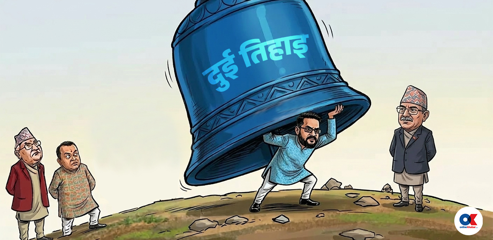
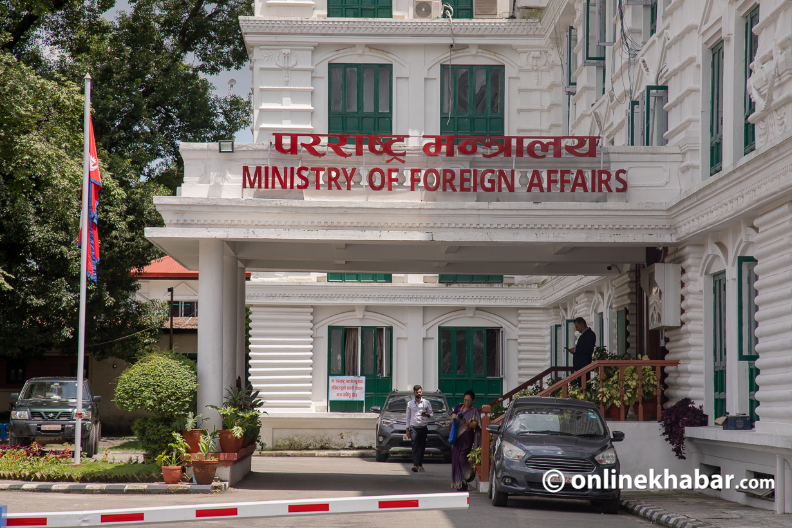
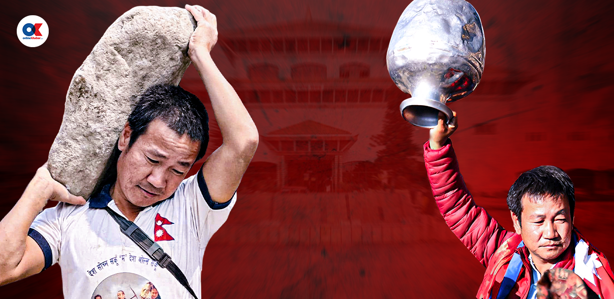

२८ फागुन २०८२, बिहीबार
२८ फागुन २०८२, बिहीबार

‘मधेशका टोल–टोलमा ठेकेदारहरूले भोटको हिसाबकिताब गर्थे, यो टोल मेरो, यो तेरो भनेर,’ उनले भने, ‘तर यसपालि जनताले स्वतन्त्र रूपमा मत दिए । पुराना
पार्टीहरूले पटक–पटक विश्वासघात गरेपछि जनतामा ठेकेदारी मानसिकता तोडिएको छ ।’

अनलाइनखबर

रास्वपाले पाएको करिब दुईतिहाइ संसद्को अंकगणित मात्र होइन, लाखौं नागरिकहरूको आशा, अपेक्षा र विश्वासको पुञ्ज हो । अब जनमतको यो भार बालेन्द्र
शाहले कसरी उठाउलान् ? सरकार बनेलगत्तै परीक्षा सुरू हुनेछ ।

मध्यपूर्वी देशमा रहेका १७ लाख २९ हजारमध्ये हालसम्म ६३ हजारभन्दा बढी नेपालीले आफ्नो विवरण अनलाइन पोर्टलमा टिपाएका छन् । तीमध्ये ५ हजार
हाराहारीले आफूहरू असुरक्षित रहेको विवरण पेस गरेको परराष्ट्र मन्त्रालयले जनाएको छ ।

२०७९ को स्थानीय चुनावमै हर्क साम्पाङले स्वतन्त्र उम्मेदवारका रूपमा धरानको लालकिल्लामा धावा बोलिसकेका थिए । अहिले त पूरै किल्ला ध्वस्त
बनाइदिए ।
#ResultWithOK
अध्यक्ष तथा प्रबन्ध निर्देशक:
धर्मराज भुसाल
प्रधान सम्पादक:
बसन्त बस्नेत
सूचना विभाग दर्ता नं.
२१४ / ०७३–७४
+977-1-4790176, +977-1-4796489
news@onlinekhabar.com
© २००६-२०२६ Onlinekhabar.com सर्वाधिकार सुरक्षित